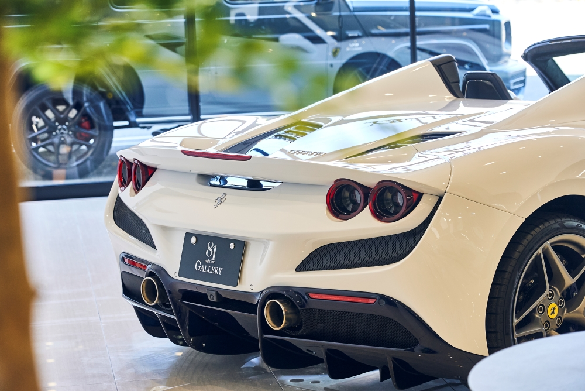
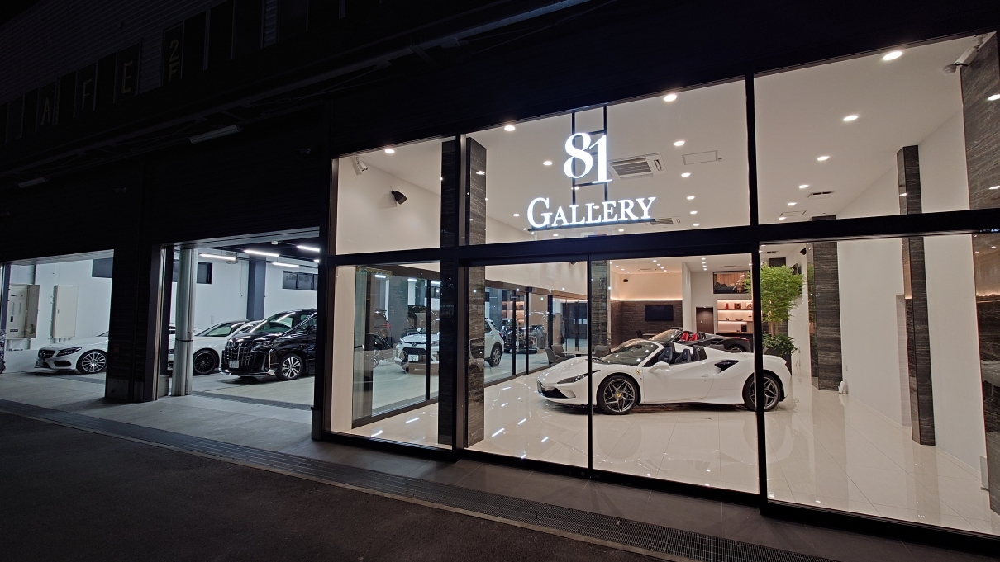
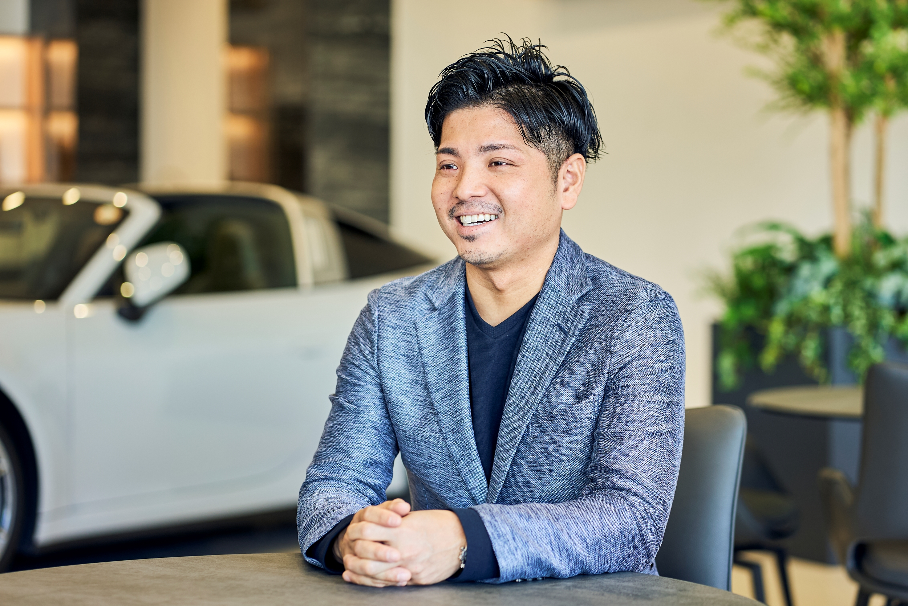
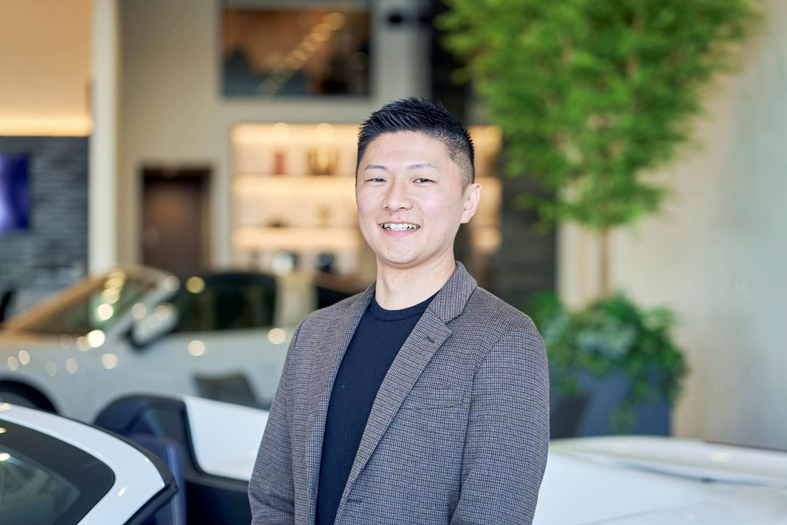
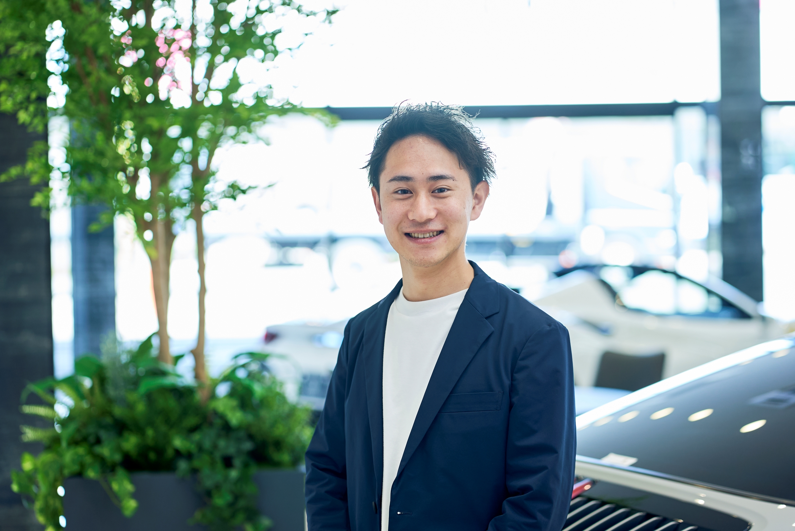
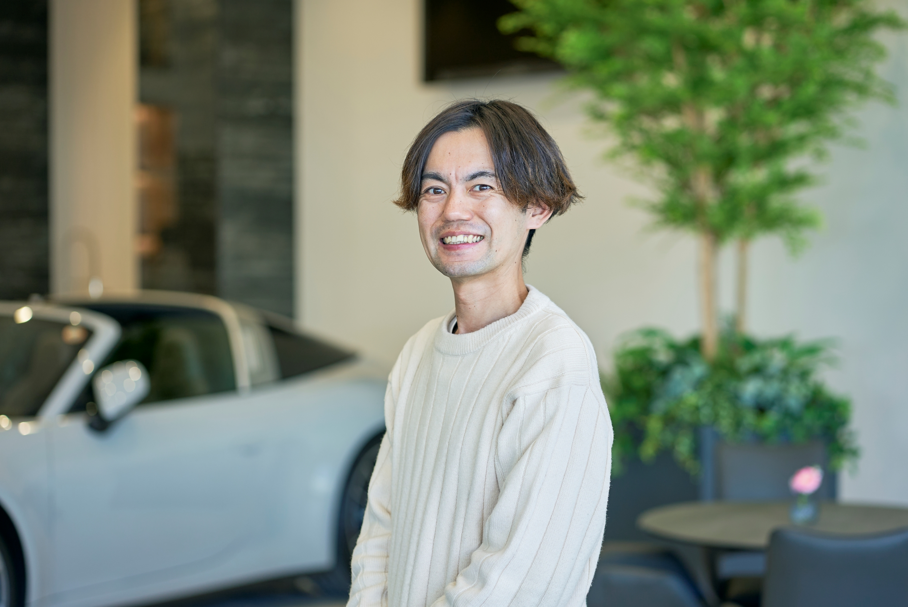
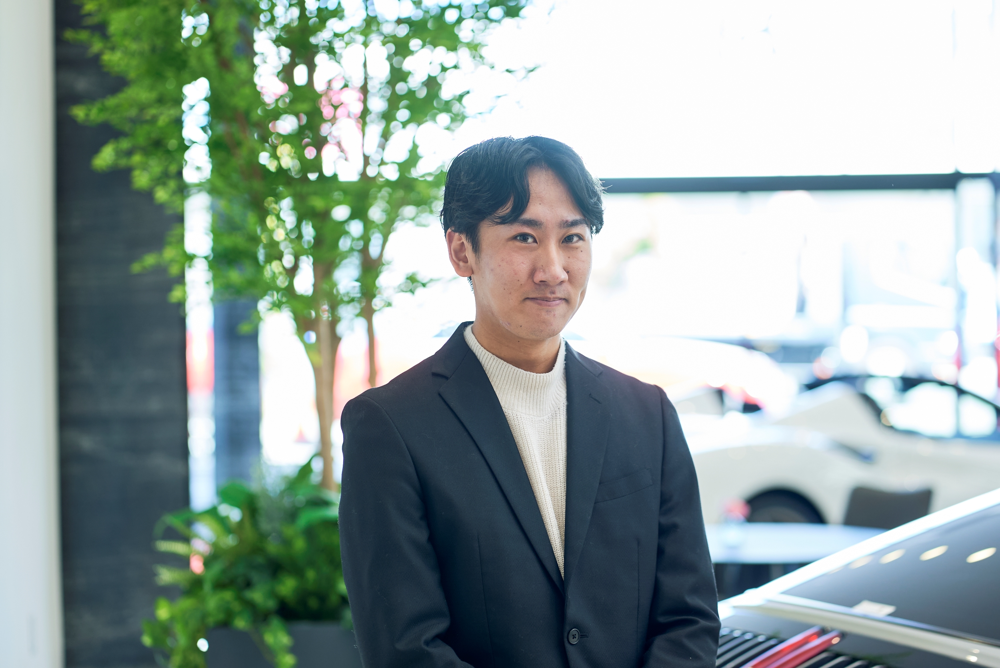
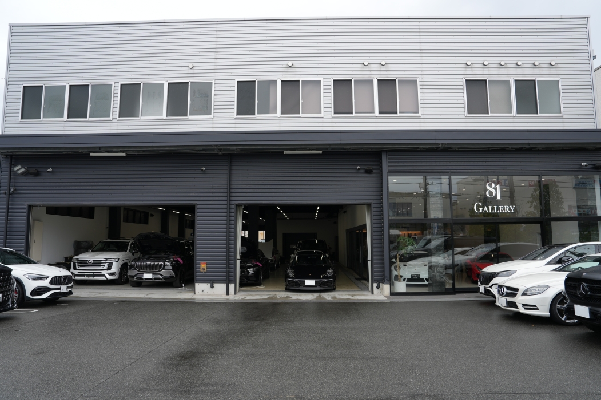
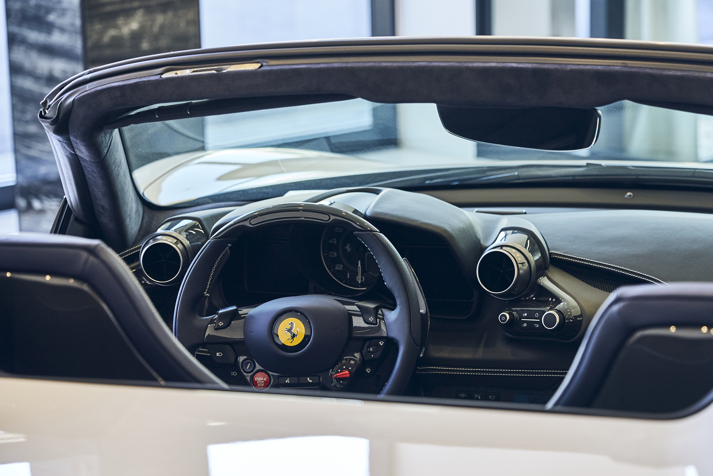
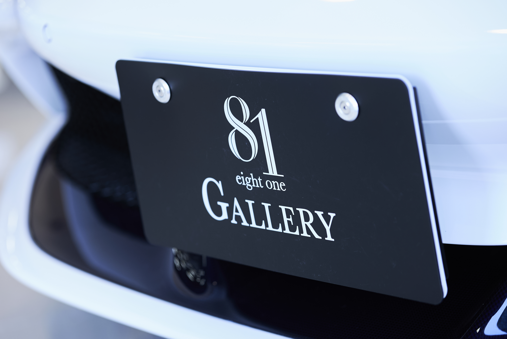

81 Gallery
プレミアムカーの画廊。所有 × 演出。
プレミアムカーの「所有する歓び」と、家族のための工場カフェの「共有する歓び」。
2つの歓びを同居させる、それが「81」の仕事です。


「努力が正当に評価される会社をつくりたい」。それが、すべての始まりでした。

前職、輸入車販売会社で7年連続 No.1 セールスマン。2017年、堺で独立。「努力が正当に評価される会社をつくりたい」が、すべての始まりでした。
創業7年で売上52億円。次の山は100億円。プレミアムカーの画廊から、家族のための工場カフェへ、そして2026年、東京拠点へ。一緒に「次の景色」を見にいく仲間を、ずっと探しています。
役職や年齢の壁はいりません。すべての社員が、ひとつの「81」を一緒につくる。72人で、もうすでにそうしています。
創業から7年で、こうなりました。誇張なく、事実を、いくつかの数字で。
最初の1年で、何が起きるか。3年目で、どこに立っているか。実際のキャリアパスを5ステップで。
職種は違っても、肩書きを越えて、ひとつの「81」を一緒につくる仲間。72名のなかから、4人をご紹介。

「車を売る」じゃなく、人生を一緒に選ぶ。そう呼べる仕事です。

フェラーリの定期整備を任される日が来た。一生忘れません。

窓の向こうのポルシェを見ながら、ラテを淹れる。

経営の隣で、会社が育つ瞬間を見ています。
職種は違っても、肩書きを越えて「81」を一緒につくる、対等な仕事です。
堺の本社から、福岡、岡山、そして2026年の東京へ。どの拠点も、ただの職場じゃなく「81」を体現する場所。


